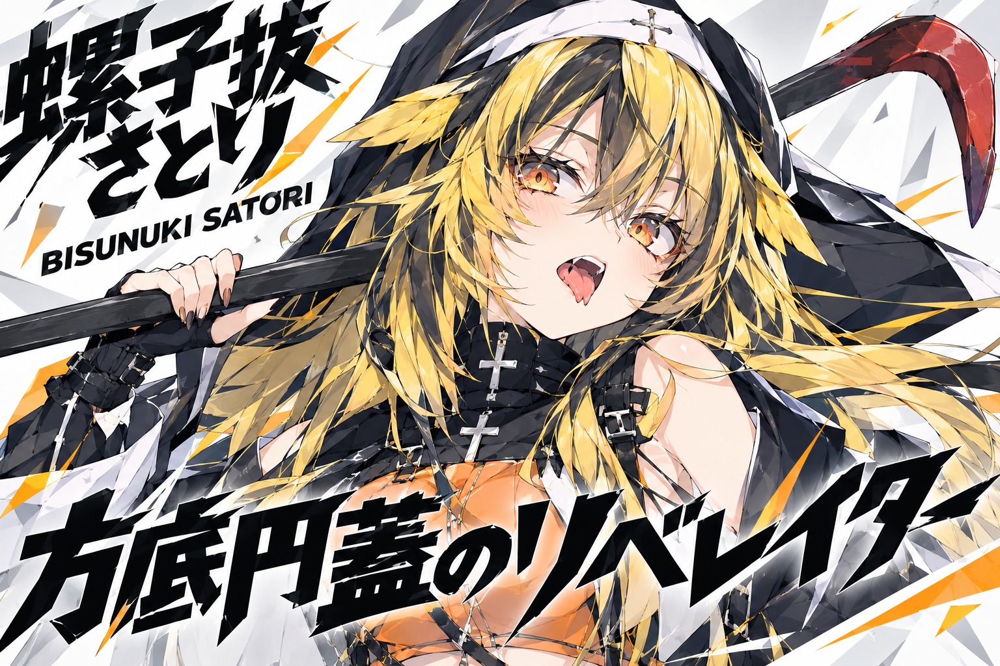
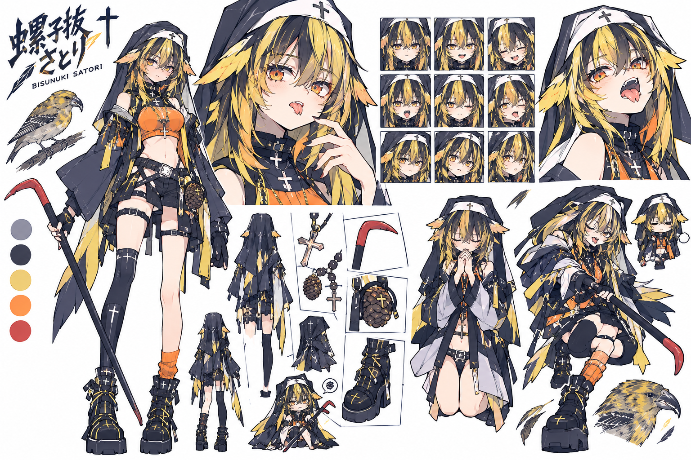
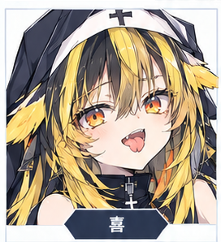
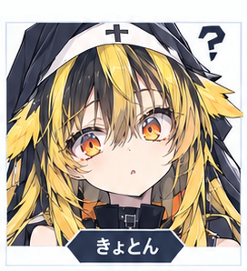
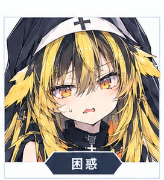
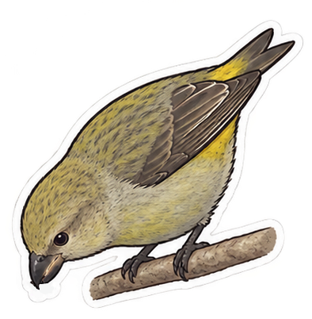

CHARACTER DETAIL / 15
螺子抜 さとり
BISUNUKI SATORI

CHARACTER VISUAL

CHARACTER DESIGN

表情差分①

表情差分②

表情差分③
ステッカー
CHARACTER INFORMATION
EPITHET
"方底円蓋のリベレイター"
ROLE
シスター
FIRST PERSON
ウチ
LIKES
信心、盆栽、暴力
DISLIKES
不明
ABILITY
物理的なものでも精神的なものでも固く閉ざされているものをこじ開ける
BIRD PROFILE
BIRD MOTIF
イスカ
SCIENTIFIC NAME
Loxia curvirostra

ヨーロッパ、アジアの北部や北アメリカに広く分布する小鳥。嘴の先が交差しているという特徴を持ち、針葉樹の種をついばんで食べる。『物事が食い違って齟齬が起きていること』を指す『鶍（いすか）の嘴』ということわざも生まれた。
CHARACTER
普段から何を考えているのかよく分からないシスター。争いごとの際には、話し合いでなくバールを持ち出して暴力で解決しようとする